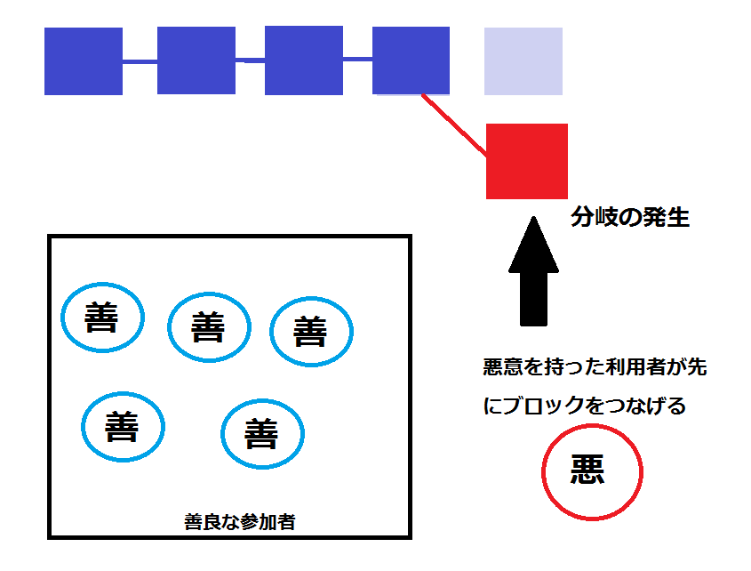

Proof of work による安全性の実験
導入1、ハッシュ計算
コンピュータの「くじ」として、ハッシュ計算という操作を利用します。
ハッシュ計算とは、与えられたデータを数字と6種類のアルファベット、計16種類の文字64桁からなる文字列に変換する操作のことです。
変換される文字列は入力するデータに応じてランダムであるため、このハッシュ値をくじのようなものとみなすことができます。
ここで、くじの「あたり」を「ハッシュ値のはじめの二桁が0で始まるようなデータ」としてみましょう。
すると、あたりを引く確率は「ランダムな文字列の中から、はじめの二桁が0であるハッシュ値を引き当てる」確率に等しく、文字は16種類あるので、その確率は16×16分の一、すなわち256分の一になります。
この確率は、最初の何桁が0と一致するかの条件を帰ることで指数関数的に減少していきます。これがコンピュータの「くじ」の仕組みです。
導入その２、分岐
しかし、これだけでは悪意を持った利用者に不正な取引を含むブロックを記録する権利を渡してしまう可能性があります。
そこで、ブロックチェーンは「分岐」がおきるようになっているのです。
善良な利用者がブロックをつなげようとハッシュ計算をしている間に、外部からそれと異なるデータがブロックチェーンに記録されると、そのブロックはすぐ記録されず、ひとつの「枝」として伸びていきます。

その後に善良な利用者によってつなげられたブロックは、また新しい枝としてブロックチェーンに記録され、二種類のブロックが平行して記録されるようになります。
２グループに分かれている利用者達は、それぞれの分岐した先の「枝」に新しいブロックをつなげようと、ハッシュ計算を再開します。
やがて二つの枝の長さにある程度の差がつくと、短い方の枝がなかったことにされ、ブロックチェーンが元の一本に戻ります。
このようにすることで、計算速度の遅い悪者が運よく「あたり」を引いたとしても、計算速度の速い多数派によってなかったことにされてしまうのです。
ハッシュ計算の仕組みがわかったところで、早速実験を行いましょう。
実験の目的
善良な利用者によってつながれているブロックチェーンに、不正なデータの記録を試みる利用者がデータの改ざんを目論んだことを想定し、擬似的なブロックチェーンシステムでシュミレーションを行うことで、安全性の検証をする。
用意するもの
Javaの実行環境(パソコン)
善良な利用者を模したハッシュ計算プログラム(善良ノードと呼ぶ)
不正なデータの登録を図る利用者を模したハッシュ計算プログラム(敵性ノードと呼ぶ)
ハッシュ計算に応じて擬似ブロックチェーンの記録を行うプログラム(観測者と呼ぶ)
手順
(1)全世界のコンピュータのうち、およそ二割がブロックチェーンの改竄を試みることを想定し、善良ノードと敵性ノードの計算速度の比が9:2になるようにプログラムを起動させる。
(2)善良ノードと敵性ノードがそれぞれ取引データを模したデータとランダムな数字を用いてハッシュ計算を行う。
(3)ハッシュ計算を行い、ハッシュ値の始めの6桁が0で始まるものを「あたり」とみなし、観測プログラムを通して取引データを記録する。
(4)善良ノードと敵性ノードは平行してブロックの追加を行い、つながるブロックの個数に5個以上の差がついたら、長いほうを正しいブロックと判断し、短いデータを破棄する。
(5)ブロックが100個つながるまでブロックがつながる様子を記録し、これを10回繰り返した。
実験の様子
実験において、Java Appletを用いてブロックがつながっていく様子を可視化しました。
実験の結果
実験を行った結果、ブロックが100つながるまでに分岐が起きた回数は最大10回、最低6回、平均して8.6回だった。中央値は7回だった
また、分岐した枝部分につながったブロック数は最高14個、最低1個、平均2.5個であった。中央値は2個だった。
敵性ノードが不正な取引データの記録に成功することはなかった。
考察
実験の結果から、計算速度の遅い方が時々ハッシュ計算に成功しても、ほとんどの場合は2,3個のブロックをつなげる間に善良ノードによって破棄されてしまっていることがわかる。
今回は全世界の二割のコンピュータがブロックチェーンの改竄を試みることを想定したが、実際に全世界のコンピュータの二割に匹敵する計算速度を確保するのはスーパーコンピュータを用いても困難なので、
その他
善良ノードと敵性ノードの数の比を6:5にすると、善良ノードのほうが多いにもかかわらず、不正なブロックが記録されることがあった。
これは、計算速度の比をプログラムの起動数で調整していたため、計算速度の比が厳密ではなかったことや、一度に計算する数が十分大きいとはいえず数学的な値へ収束しにくかったこと、実験のために実際よりもハッシュ値の「あたり」を引く頻度を高く設定していたこと等が原因として考えられる。
まとめ
bitcoinの創始者であるサトシ・ナカモトの発表した論文には、「Proof of workシステムを破るほど高い計算能力を有しているならば、全うに承認作業を行ってマイニングによる利益を得たほうが得をする」とあります。
また、不正対策が不完全であることがわかってしまえば、仮想通貨は信頼を失い、改竄して手に入れた仮想通貨の価値が下がってしまいます。
この二つのことから、利益を上げるために仮想通貨を改竄するのは割りにあわなくなってしまいます。
こうして、さまざまな高度な技術を組み合わせることによって、仮想通貨は通貨としての価値を維持できているのです。